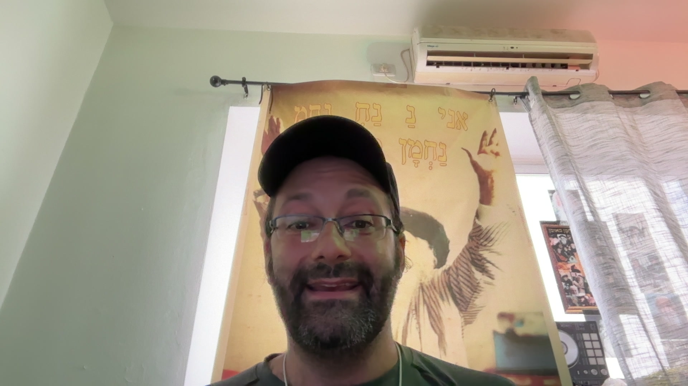

Pont Direct Jérusalem ↔ Bat Yamגשר ישיר: ירושלים ↔ בת ים

David Amor · DreamNova Jérusalem דוד אמור · DreamNova ירושלים
Fondateur DreamNova · 28 sites en prod · 58 systèmes IA construits מייסד DreamNova · 28 אתרים באוויר · 58 מערכות AI בפרודקשן
« Michal, Gemma et toute l'équipe de דפוס נקודה (Nekuda Print) : ce programme a été pensé spécialement pour votre studio à Bat Yam. Pendant nos 5 séances et bien après, vous avez ma ligne directe à Jérusalem pour construire, automatiser et décrocher vos plus beaux clients. » ״מיכל, ג׳מה והחברות בדפוס נקודה: התוכנית הזו נבנתה במיוחד למידות של הסטודיו ובית הדפוס שלכן בבת ים. לאורך 5 המפגשים וגם אחריהם, יש לכן קו ישיר אליי לירושלים לכל שאלה, פרויקט גדול או אוטומציה חדשה.״
Fiche Studio : דפוס נקודה (Nekuda Print) פרטי הסטודיו: דפוס נקודה בע״מ
- 👥 Participantes :משתתפות: Michal, Gemma + 2 à 4 amies créativesמיכל, ג׳מה + 2 עד 4 חברות
- 🌐 Site officiel :אתר קיים: nekudap.co.il
- 📞 Téléphone :טלפון דפוס נקודה: 03-6814430 · 052-3230240
- ⏱ Format :מתכונת הקורס: 5 séances × 2h30 à 3h00 (15h de pratique)5 מפגשים × 2.5 עד 3 שעות (15 שעות מעשיות)
- 🚀 Objectif :מטרת העל: Autonomie totale IA (Web, Vidéo, Print, Automatisation & Clients)עצמאות מלאה ב-AI (אתרים, וידאו, דפוס, אוטומציה ולקוחות)